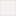
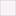
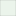

<!doctype html>
<html lang="en">
    <head>
        <meta charset="utf-8">
        <meta http-equiv="X-UA-Compatible" content="IE=edge">
        <meta name="viewport" content="initial-scale=1,user-scalable=no,maximum-scale=1,width=device-width">
        <meta name="mobile-web-app-capable" content="yes">
        <meta name="apple-mobile-web-app-capable" content="yes">
        <link rel="stylesheet" href="css/leaflet.css">
        <link rel="stylesheet" href="css/qgis2web.css"><link rel="stylesheet" href="css/fontawesome-all.min.css">
        <style>
        html, body, #map {
            width: 100%;
            height: 100%;
            padding: 0;
            margin: 0;
        }
        </style>
        <title></title>
    </head>
    <body>
        <div id="map">
        </div>
        <script src="js/qgis2web_expressions.js"></script>
        <script src="js/leaflet.js"></script>
        <script src="js/leaflet.rotatedMarker.js"></script>
        <script src="js/leaflet.pattern.js"></script>
        <script src="js/leaflet-hash.js"></script>
        <script src="js/Autolinker.min.js"></script>
        <script src="js/rbush.min.js"></script>
        <script src="js/labelgun.min.js"></script>
        <script src="js/labels.js"></script>
        <script src="data/ParisBuildings_0.js"></script>
        <script src="data/ParisPOIS_1.js"></script>
        <script src="data/ParisPOFW_2.js"></script>
        <script src="data/ParisTransport_3.js"></script>
        <script src="data/ParisWaterways_4.js"></script>
        <script src="data/ParisTraffic_5.js"></script>
        <script src="data/ParisRoads_6.js"></script>
        <script src="data/ParisRailways_7.js"></script>
        <script src="data/ParisWater_8.js"></script>
        <script>
        var map = L.map('map', {
            zoomControl:true, maxZoom:28, minZoom:1
        }).fitBounds([[0.00043764907254168384,1.9456371431735512e-05],[0.0004401105937278383,2.308443961491297e-05]]);
        var hash = new L.Hash(map);
        map.attributionControl.setPrefix('<a href="https://github.com/tomchadwin/qgis2web" target="_blank">qgis2web</a> &middot; <a href="https://leafletjs.com" title="A JS library for interactive maps">Leaflet</a> &middot; <a href="https://qgis.org">QGIS</a>');
        var autolinker = new Autolinker({truncate: {length: 30, location: 'smart'}});
        var bounds_group = new L.featureGroup([]);
        function setBounds() {
        }
        function pop_ParisBuildings_0(feature, layer) {
        }

        function style_ParisBuildings_0_0() {
            return {
                pane: 'pane_ParisBuildings_0',
                opacity: 1,
                color: 'rgba(181,155,167,1.0)',
                dashArray: '',
                lineCap: 'butt',
                lineJoin: 'miter',
                weight: 1.0, 
                fill: true,
                fillOpacity: 1,
                fillColor: 'rgba(201,179,189,1.0)',
                interactive: true,
            }
        }
        map.createPane('pane_ParisBuildings_0');
        map.getPane('pane_ParisBuildings_0').style.zIndex = 400;
        map.getPane('pane_ParisBuildings_0').style['mix-blend-mode'] = 'normal';
        var layer_ParisBuildings_0 = new L.geoJson(json_ParisBuildings_0, {
            attribution: '',
            interactive: true,
            dataVar: 'json_ParisBuildings_0',
            layerName: 'layer_ParisBuildings_0',
            pane: 'pane_ParisBuildings_0',
            onEachFeature: pop_ParisBuildings_0,
            style: style_ParisBuildings_0_0,
        });
        bounds_group.addLayer(layer_ParisBuildings_0);
        map.addLayer(layer_ParisBuildings_0);
        function pop_ParisPOIS_1(feature, layer) {
        }
        function style_ParisPOIS_1_0(feature) {
            var context = {
                feature: feature,
                variables: {}
            };
            // Start of if blocks and style check logic
            if (exp_ParisPOIS_1rule0_eval_expression(context)) {
                  return {
                pane: 'pane_ParisPOIS_1',
                opacity: 1,
                color: 'rgba(35,35,35,1.0)',
                dashArray: '',
                lineCap: 'butt',
                lineJoin: 'miter',
                weight: 1.0, 
                fill: true,
                fillOpacity: 1,
                fillColor: 'rgba(167,237,167,1.0)',
                interactive: true,
            };
                }
                else if (exp_ParisPOIS_1rule1_eval_expression(context)) {
                  return {
                pane: 'pane_ParisPOIS_1',
                opacity: 1,
                color: 'rgba(35,35,35,1.0)',
                dashArray: '',
                lineCap: 'butt',
                lineJoin: 'miter',
                weight: 1.0, 
                fill: true,
                fillOpacity: 1,
                fillColor: 'rgba(149,207,156,1.0)',
                interactive: true,
            };
                }
                else if (exp_ParisPOIS_1rule2_eval_expression(context)) {
                  return {
                pane: 'pane_ParisPOIS_1',
                opacity: 1,
                color: 'rgba(35,35,35,1.0)',
                dashArray: '',
                lineCap: 'butt',
                lineJoin: 'miter',
                weight: 1.0, 
                fill: true,
                fillOpacity: 1,
                fillColor: 'rgba(157,201,157,1.0)',
                interactive: true,
            };
                }
            else {
                return {fill: false, stroke: false};
            }
        }
        map.createPane('pane_ParisPOIS_1');
        map.getPane('pane_ParisPOIS_1').style.zIndex = 401;
        map.getPane('pane_ParisPOIS_1').style['mix-blend-mode'] = 'normal';
        var layer_ParisPOIS_1 = new L.geoJson(json_ParisPOIS_1, {
            attribution: '',
            interactive: true,
            dataVar: 'json_ParisPOIS_1',
            layerName: 'layer_ParisPOIS_1',
            pane: 'pane_ParisPOIS_1',
            onEachFeature: pop_ParisPOIS_1,
            style: style_ParisPOIS_1_0,
        });
        bounds_group.addLayer(layer_ParisPOIS_1);
        map.addLayer(layer_ParisPOIS_1);
        function pop_ParisPOFW_2(feature, layer) {
        }

        function style_ParisPOFW_2_0() {
            return {
                pane: 'pane_ParisPOFW_2',
                opacity: 1,
                color: 'rgba(35,35,35,1.0)',
                dashArray: '',
                lineCap: 'butt',
                lineJoin: 'miter',
                weight: 1.0, 
                fill: true,
                fillOpacity: 1,
                fillColor: 'rgba(211,189,203,1.0)',
                interactive: true,
            }
        }
        map.createPane('pane_ParisPOFW_2');
        map.getPane('pane_ParisPOFW_2').style.zIndex = 402;
        map.getPane('pane_ParisPOFW_2').style['mix-blend-mode'] = 'normal';
        var layer_ParisPOFW_2 = new L.geoJson(json_ParisPOFW_2, {
            attribution: '',
            interactive: true,
            dataVar: 'json_ParisPOFW_2',
            layerName: 'layer_ParisPOFW_2',
            pane: 'pane_ParisPOFW_2',
            onEachFeature: pop_ParisPOFW_2,
            style: style_ParisPOFW_2_0,
        });
        bounds_group.addLayer(layer_ParisPOFW_2);
        map.addLayer(layer_ParisPOFW_2);
        function pop_ParisTransport_3(feature, layer) {
        }

        function style_ParisTransport_3_0() {
            return {
                pane: 'pane_ParisTransport_3',
                opacity: 1,
                color: 'rgba(35,35,35,1.0)',
                dashArray: '',
                lineCap: 'butt',
                lineJoin: 'miter',
                weight: 1.0, 
                fill: true,
                fillOpacity: 1,
                fillColor: 'rgba(169,167,172,1.0)',
                interactive: true,
            }
        }
        map.createPane('pane_ParisTransport_3');
        map.getPane('pane_ParisTransport_3').style.zIndex = 403;
        map.getPane('pane_ParisTransport_3').style['mix-blend-mode'] = 'normal';
        var layer_ParisTransport_3 = new L.geoJson(json_ParisTransport_3, {
            attribution: '',
            interactive: true,
            dataVar: 'json_ParisTransport_3',
            layerName: 'layer_ParisTransport_3',
            pane: 'pane_ParisTransport_3',
            onEachFeature: pop_ParisTransport_3,
            style: style_ParisTransport_3_0,
        });
        bounds_group.addLayer(layer_ParisTransport_3);
        map.addLayer(layer_ParisTransport_3);
        function pop_ParisWaterways_4(feature, layer) {
        }

        function style_ParisWaterways_4_0() {
            return {
                pane: 'pane_ParisWaterways_4',
                opacity: 1,
                color: 'rgba(196,60,57,1.0)',
                dashArray: '',
                lineCap: 'square',
                lineJoin: 'bevel',
                weight: 1.0,
                fillOpacity: 0,
                interactive: true,
            }
        }
        map.createPane('pane_ParisWaterways_4');
        map.getPane('pane_ParisWaterways_4').style.zIndex = 404;
        map.getPane('pane_ParisWaterways_4').style['mix-blend-mode'] = 'normal';
        var layer_ParisWaterways_4 = new L.geoJson(json_ParisWaterways_4, {
            attribution: '',
            interactive: true,
            dataVar: 'json_ParisWaterways_4',
            layerName: 'layer_ParisWaterways_4',
            pane: 'pane_ParisWaterways_4',
            onEachFeature: pop_ParisWaterways_4,
            style: style_ParisWaterways_4_0,
        });
        bounds_group.addLayer(layer_ParisWaterways_4);
        map.addLayer(layer_ParisWaterways_4);
        function pop_ParisTraffic_5(feature, layer) {
        }

        function style_ParisTraffic_5_0() {
            return {
                pane: 'pane_ParisTraffic_5',
                opacity: 1,
                color: 'rgba(35,35,35,1.0)',
                dashArray: '',
                lineCap: 'butt',
                lineJoin: 'miter',
                weight: 1.0, 
                fill: true,
                fillOpacity: 1,
                fillColor: 'rgba(161,132,133,1.0)',
                interactive: true,
            }
        }
        map.createPane('pane_ParisTraffic_5');
        map.getPane('pane_ParisTraffic_5').style.zIndex = 405;
        map.getPane('pane_ParisTraffic_5').style['mix-blend-mode'] = 'normal';
        var layer_ParisTraffic_5 = new L.geoJson(json_ParisTraffic_5, {
            attribution: '',
            interactive: true,
            dataVar: 'json_ParisTraffic_5',
            layerName: 'layer_ParisTraffic_5',
            pane: 'pane_ParisTraffic_5',
            onEachFeature: pop_ParisTraffic_5,
            style: style_ParisTraffic_5_0,
        });
        bounds_group.addLayer(layer_ParisTraffic_5);
        map.addLayer(layer_ParisTraffic_5);
        function pop_ParisRoads_6(feature, layer) {
        }

        function style_ParisRoads_6_0() {
            return {
                pane: 'pane_ParisRoads_6',
                opacity: 1,
                color: 'rgba(232,113,141,1.0)',
                dashArray: '',
                lineCap: 'square',
                lineJoin: 'bevel',
                weight: 1.0,
                fillOpacity: 0,
                interactive: true,
            }
        }
        map.createPane('pane_ParisRoads_6');
        map.getPane('pane_ParisRoads_6').style.zIndex = 406;
        map.getPane('pane_ParisRoads_6').style['mix-blend-mode'] = 'normal';
        var layer_ParisRoads_6 = new L.geoJson(json_ParisRoads_6, {
            attribution: '',
            interactive: true,
            dataVar: 'json_ParisRoads_6',
            layerName: 'layer_ParisRoads_6',
            pane: 'pane_ParisRoads_6',
            onEachFeature: pop_ParisRoads_6,
            style: style_ParisRoads_6_0,
        });
        bounds_group.addLayer(layer_ParisRoads_6);
        map.addLayer(layer_ParisRoads_6);
        function pop_ParisRailways_7(feature, layer) {
        }

        function style_ParisRailways_7_0() {
            return {
                pane: 'pane_ParisRailways_7',
                opacity: 1,
                color: 'rgba(179,172,173,1.0)',
                dashArray: '',
                lineCap: 'square',
                lineJoin: 'bevel',
                weight: 1.0,
                fillOpacity: 0,
                interactive: true,
            }
        }
        map.createPane('pane_ParisRailways_7');
        map.getPane('pane_ParisRailways_7').style.zIndex = 407;
        map.getPane('pane_ParisRailways_7').style['mix-blend-mode'] = 'normal';
        var layer_ParisRailways_7 = new L.geoJson(json_ParisRailways_7, {
            attribution: '',
            interactive: true,
            dataVar: 'json_ParisRailways_7',
            layerName: 'layer_ParisRailways_7',
            pane: 'pane_ParisRailways_7',
            onEachFeature: pop_ParisRailways_7,
            style: style_ParisRailways_7_0,
        });
        bounds_group.addLayer(layer_ParisRailways_7);
        map.addLayer(layer_ParisRailways_7);
        function pop_ParisWater_8(feature, layer) {
        }

        function style_ParisWater_8_0() {
            return {
                pane: 'pane_ParisWater_8',
                opacity: 1,
                color: 'rgba(35,35,35,1.0)',
                dashArray: '',
                lineCap: 'butt',
                lineJoin: 'miter',
                weight: 1.0, 
                fill: true,
                fillOpacity: 1,
                fillColor: 'rgba(199,218,231,1.0)',
                interactive: true,
            }
        }
        map.createPane('pane_ParisWater_8');
        map.getPane('pane_ParisWater_8').style.zIndex = 408;
        map.getPane('pane_ParisWater_8').style['mix-blend-mode'] = 'normal';
        var layer_ParisWater_8 = new L.geoJson(json_ParisWater_8, {
            attribution: '',
            interactive: true,
            dataVar: 'json_ParisWater_8',
            layerName: 'layer_ParisWater_8',
            pane: 'pane_ParisWater_8',
            onEachFeature: pop_ParisWater_8,
            style: style_ParisWater_8_0,
        });
        bounds_group.addLayer(layer_ParisWater_8);
        map.addLayer(layer_ParisWater_8);
        var baseMaps = {};
        L.control.layers(baseMaps,{' Paris | Water': layer_ParisWater_8,' Paris | Railways': layer_ParisRailways_7,' Paris | Roads': layer_ParisRoads_6,' Paris | Traffic': layer_ParisTraffic_5,' Paris | Waterways': layer_ParisWaterways_4,' Paris | Transport': layer_ParisTransport_3,' Paris | POFW': layer_ParisPOFW_2,'Paris | POIS<br /><table><tr><td style="text-align: center;"></td><td>Park</td></tr><tr><td style="text-align: center;"></td><td></td></tr><tr><td style="text-align: center;"></td><td></td></tr></table>': layer_ParisPOIS_1,' Paris | Buildings': layer_ParisBuildings_0,},{collapsed:false}).addTo(map);
        setBounds();
        </script>
    </body>
</html>
